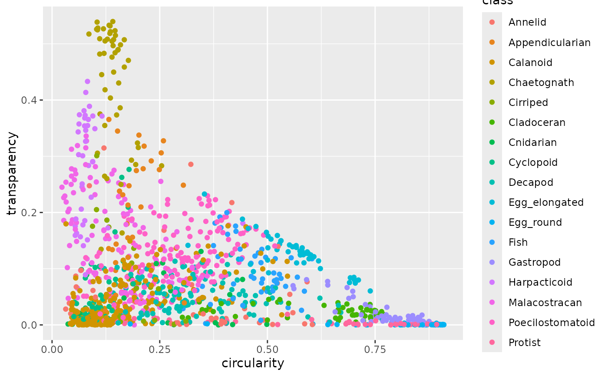

Various features measured by image analysis with the package zooimage and
ImageJ on samples of zooplankton originating from Tulear, Madagascar. The
taxonomic classification is also provided in the class variable.
zooplanktonFormat
A data frame with 19 variables:
ecdThe "equivalent circular diameter", the diameter of a circle with the same area as the particle (in mm).
areaThe area of the particle on the image (in mm^2).
perimeterThe perimeter of the particle (in mm).
feretThe Feret diameter, that is, the largest measured diameter of the particle on the image (mm).
majorThe major axis of the ellipsoid matching the particle (mm).
minorThe minor axis of the same ellipsoid (mm).
meanThe mean value of the gray levels calibrated in optical density (OD), thus, unitless.
modeThe most frequent gray level in that particle in OD.
minThe most transparent part in OD.
maxThe most opaque part in OD.
std_devThe standard deviation of the OD distribution inside the particle.
rangeTransparency range as
max-min.sizeThe mean diameter of the particle, as the average of
minorandmajor(mm).aspectAspect ratio of the particle as
minor/major.elongationThe
areadivided by the area of a circle of the sameperimeterof the particle.compactnesssqrt((4/pi) *
area) /major.transparency1 - (
ecd-size).circularity4pi(
area/perimeter^2).densityDensity integrate by the surface covered by each gray level, i.e. O.D., inside the particle.
classThe classification of this particle. 17 classes are made. Note that
CopepodsareCalanoid+Cyclopoid+Harpactivoid+Poecilostomatoidand they represent the most abundant zooplankton at sea.
This is a typical training set used to train a plankton classifier with machine learning algorithms. Organisms originate from various samples (different seasons, depth, etc. to take the variability into account). However, the abundance of the different classes do not match abundance found in each sample, i.e., rare classes are over-represented in this training set. Only zooplankton classes are present in the dataset. Full data also contains classes for phytoplankton, marine snow, etc. Take care that several variables are correlated!
Source
Grosjean, Ph & K. Denis (2004). Supervised classification of images, applied to plankton samples using R and ZooImage. Chap.12 of Data Mining Applications with R. Zhao, Y. & Y. Cen (eds). Elsevier. Pp 331-365. https://doi.org/10.1016/C2012-0-00333-X.
Examples
table(zooplankton$class)
#>
#> Annelid Appendicularian Calanoid Chaetognath
#> 50 36 288 51
#> Cirriped Cladoceran Cnidarian Cyclopoid
#> 22 50 22 50
#> Decapod Egg_elongated Egg_round Fish
#> 126 50 49 50
#> Gastropod Harpacticoid Malacostracan Poecilostomatoid
#> 50 39 121 158
#> Protist
#> 50
library(ggplot2)
ggplot(zooplankton, aes(circularity, transparency, color = class)) +
geom_point()
